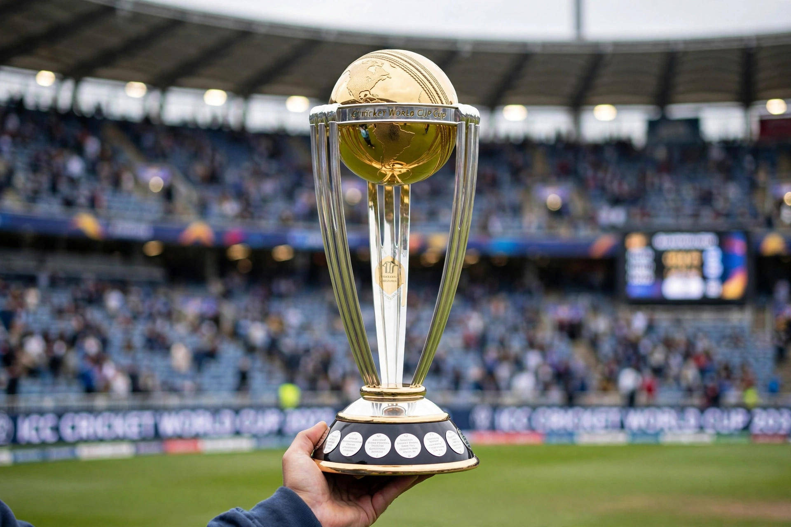

From Wikipedia, the free encyclopedia
| ICC Cricket World Cup | |
|---|---|
 The Cricket World Cup trophy, a golden globe held aloft on a silver column | |
| Founded | 1975 |
| Organiser | International Cricket Council (ICC) |
| Format | One Day International (50 overs) |
| Current champions | Australia (6th title, 2023) |
| Most successful | Australia (6 titles) |
The ICC Cricket World Cup is the international championship of One Day International (ODI) cricket. The event is organised by the sport's governing body, the International Cricket Council (ICC), every four years, with preliminary qualification rounds leading to a finals tournament. The tournament is one of the most viewed sporting events in the world.
The first World Cup was organised in England in June 1975 — remarkably, the Women's Cricket World Cup had been held two years earlier, in 1973. The West Indies won the first two editions; the tournament then rotated among the cricket-playing nations. The 2011 edition, co-hosted by India, Sri Lanka and Bangladesh, was won by the India national cricket team, captained by MS Dhoni, with Sachin Tendulkar finally winning the title at his sixth attempt. The 2019 final at Lord's, in which England beat New Zealand on boundary countback after a tied match and a tied Super Over, is considered one of the greatest one-day games ever played.
| Year | Host | Winner | Runner-up |
|---|---|---|---|
| 2007 | West Indies | Australia | Sri Lanka |
| 2011 | India / Sri Lanka / Bangladesh | India | Sri Lanka |
| 2015 | Australia / New Zealand | Australia | New Zealand |
| 2019 | England and Wales | England | New Zealand |
| 2023 | India | Australia | India |
In the 2023 final at the Narendra Modi Stadium in Ahmedabad, Australia defeated hosts India — who had won all ten of their previous matches — by six wickets, Travis Head scoring a century. Australia's six titles (1987, 1999, 2003, 2007, 2015, 2023) make it by far the most successful team in the tournament's history.
Categories: Cricket World Cup | ICC competitions | Recurring sporting events established in 1975